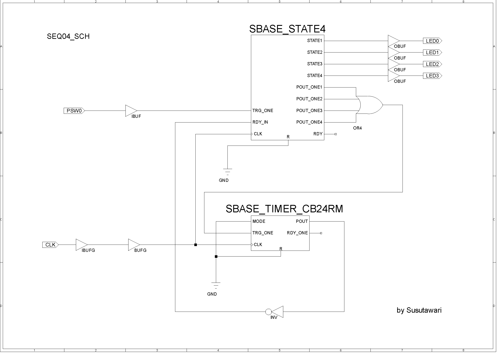

解説文の誤り
誤：VHDLでは入出力を必要なビット幅のstd_logic_vector で宣言し、演算子「+」を使用します。std_logic_vector で宣言された配線は、指定ビット幅のバスとなります。さらに内部信号として4bit 幅の「sum」を定義し、21行目で入力A+B の結果をsumに接続しています。これは出力信号名をSとCO に分離するためです。またこのとき、A、B は共に3bit幅なのでそれぞれ頭に'0'を付けて4bitに拡張してから加算しています。これは配線「<=」の左辺と右辺は同じビット幅でなければならないためです。 最後に22、23 行目でsumの最上位であるsum(3)がキャリーアウトCO、下位3bit が加算結果Sであるため、これらをCO、Sにそれぞれ出力しています。
正：VHDLでは入出力を必要なビット幅のstd_logic_vector で宣言し、演算子「+」を使用します。std_logic_vector で宣言された配線は、指定ビット幅のバスとなります（24〜26行目）。まず、30, 31行目で3bit幅であるa, bにそれぞれスイッチ入力を接続しています。このとき右辺の記述の順序に意味があり、上位ビットから記述します。つまり、この場合はa(2)=SW2, a(1)=SW1, a(0)=SW0, b(2)=SW5, b(1)=SW4, b(0)=SW3となります。
4bit 幅の「s」を定義し、32行目で入力a+b の結果をsに入力しています。またこのとき、A、B は共に3bit幅なのでそれぞれ頭に'0'を付けて4bitに拡張してから加算しています。これは配線「<=」の左辺と右辺は同じビット幅でなければならないためです。 最後に34〜36行目で加算結果sの各ビットをLED0〜LED2に、37行目でsの最上位であるs(3)をキャリーアウトを表すLED3に出力しています。
解説文の誤り
誤：Verilog HDL の場合（表5.40）は、8 行目のように出力先（左辺）も複数記述できるので、VHDL のようにsumに一度接続してから分解する必要はありません。左辺は"CO"の1bitと"S"の3bitの合計で4bitとなり、右辺も3bit 同士の論理和で4bitとなっています。
正：Verilog HDL の場合（表5.40）は、14行目のように出力先（左辺）も複数記述できるので、VHDL のようにsに一度接続してから分解する必要はありません。左辺は出力先のLEDの4bitとなり、右辺も3bit 同士の論理和で4bitとなっています。
加算器の例（表5.39）と同様に入出力をSW, LEDとした場合の表記は下記の通りです。加算器との差異は、32行目の符号をマイナスとしているのみとなります。
参考：
1: library IEEE;
2: use IEEE.std_logic_1164.all;
3: use IEEE.std_logic_unsigned.all;
4:
5: entity FS3_VHDL is
6:
7: port (
8: SW0 : in std_logic;
9: SW1 : in std_logic;
10: SW2 : in std_logic;
11: SW3 : in std_logic;
12: SW4 : in std_logic;
13: SW5 : in std_logic;
14:
15: LED0 : out std_logic;
16: LED1 : out std_logic;
17: LED2 : out std_logic;
18: LED3 : out std_logic);
19:
20: end FS3_VHDL;
21:
22: architecture RTL of FS3_VHDL is
23:
24: signal a : std_logic_vector(2 downto 0);
25: signal b : std_logic_vector(2 downto 0);
26: signal s : std_logic_vector(3 downto 0);
27:
28: begin
29:
30: a <= SW2 & SW1 & SW0;
31: b <= SW5 & SW4 & SW3;
32: s <= ('0' & a) - ('0' & b);
33:
34: LED0 <= s(0);
35: LED1 <= s(1);
36: LED2 <= s(2);
37: LED3 <= s(3); -- s(3) is BO
38:
39: end RTL;
加算器の例（表5.40）と同様に入出力をSW, LEDとした場合の表記は下記の通りです。加算器との差異は、14行目の符号をマイナスとしているのみとなります。
参考：
1: module FS3_VERILOG(SW0, SW1, SW2, SW3, SW4, SW5, LED0, LED1, LED2, LED3);
2:
3: input SW0;
4: input SW1;
5: input SW2;
6: input SW3;
7: input SW4;
8: input SW5;
9: output LED0;
10: output LED1;
11: output LED2;
12: output LED3;
13:
14: assign {LED3, LED2, LED1, LED0} = {SW2, SW1, SW0} - {SW5, SW4, SW3};
15:
16: endmodule
解説文の誤り
誤：VHDL(表5.50)の23 〜 24 行目で、減算結果D は内部信号のsub(3)が'1'のときにsub(2 downto 0)の補数を出力し、'0'のときはsub(2 downto 0)をそのまま出力します。Verilog HDL（表5.51）の場合も12 行目で同様の回路を実現しています。
正：VHDL（表5.50）の34〜35行目で、減算結果dは内部信号のsub(3)が'1'のときにsub(2 downto 0)の補数を出力し、'0'のときはsub(2 downto 0)をそのまま出力します。Verilog HDL（表5.51）の場合も18行目で同様の回路を実現しています。
解説文の誤り
誤：まず、表5.59 のVHDLでは、19 行目〜24 行目が順序回路の動作を示す、process文です。process文では19 行目にあるように、
正：まず、表5.59 のVHDLでは、29 行目〜34 行目が順序回路の動作を示す、process文です。process文では29 行目にあるように、
解説文の誤り
誤：21行目のif 文の「SW1'event and SW1 ='1'」というのはSW1の立ち上がりエッジを示しています。立ち下がりエッジの場合は、「SW1'event and SW1 ='0'」と記述します。また他に「rising_edge(SW1)」および「falling_edge(SW1)」という記述も可能です。
正：31行目のif 文の「clk'event and clk ='1'」というのはclkの立ち上がりエッジを示しています。立ち下がりエッジの場合は、「clk'event and clk ='0'」と記述します。また他に「rising_edge(clk)」および「falling_edge(clk)」という記述も可能です。
解説文の誤り
誤：Verilog HDL（表5.60）の場合も同様に、9 行目〜11行目の記述でSW1の立ち上がりエッジで、SW0 の値が取り込まれ、LED0 に出力されます。
正：Verilog HDL（表5.60）の場合も同様に、15行目〜17行目の記述でclkの立ち上がりエッジで、SW0 の値が取り込まれ、LED0 に出力されます。
接続先信号の誤り（2箇所）
誤：1: library IEEE; 2: use IEEE.std_logic_1164.all; 3: 4: entity DFF2_VHDL is 5: 6: port ( 7: SW0 : in std_logic; 8: SW1 : in std_logic; 9: LED0 : out std_logic); 10: 11: end DFF2_VHDL; 12: 13: architecture RTL of DFF2_VHDL is 14: 15: signal CLK : std_logic; 16: signal D : std_logic; 17: signal S1, R1, Q1, nQ1 : std_logic; 18: signal S2, R2, Q2, nQ2 : std_logic; 19: signal S3, R3, Q, nQ : std_logic; 20: 21: begin 22: 23: CLK <= SW1; 24: D <= SW0; 25: 26: R1 <= not CLK; 27: S1 <= nQ2; 28: Q1 <= not (R1 or nQ1); 29: nQ1 <= not (S1 or Q1); 30: 31: R2 <= not D; 32: S2 <= not CLK or Q1 ; 33: Q2 <= not (R2 or nQ2); 34: nQ2 <= not (S2 or Q2); 35: 36: R3 <= nQ2; 37: S2 <= Q1; 38: Q <= not (R3 or nQ); 39: nQ <= not (S3 or Q); 40: 41: LED0 <= Q; 42: 43: end RTL;
1: library IEEE; 2: use IEEE.std_logic_1164.all; 3: 4: entity DFF2_VHDL is 5: 6: port ( 7: SW0 : in std_logic; 8: SW1 : in std_logic; 9: LED0 : out std_logic); 10: 11: end DFF2_VHDL; 12: 13: architecture RTL of DFF2_VHDL is 14: 15: signal CLK : std_logic; 16: signal D : std_logic; 17: signal S1, R1, Q1, nQ1 : std_logic; 18: signal S2, R2, Q2, nQ2 : std_logic; 19: signal S3, R3, Q, nQ : std_logic; 20: 21: begin 22: 23: CLK <= SW1; 24: D <= SW0; 25: 26: R1 <= not CLK; 27: S1 <= Q2; 28: Q1 <= not (R1 or nQ1); 29: nQ1 <= not (S1 or Q1); 30: 31: R2 <= not D; 32: S2 <= not CLK or Q1 ; 33: Q2 <= not (R2 or nQ2); 34: nQ2 <= not (S2 or Q2); 35: 36: R3 <= nQ2; 37: S3 <= Q1; 38: Q <= not (R3 or nQ); 39: nQ <= not (S3 or Q); 40: 41: LED0 <= Q; 42: 43: end RTL;(DFF2_VHDL.vhd)
接続先信号の誤り（2箇所）
誤：1: module DFF2_VERILOG(SW0, SW1, LED0); 2: 3: input SW0; 4: input SW1; 5: output LED0; 6: 7: wire CLK; 8: wire D; 9: wire S1, R1, Q1, nQ1; 10: wire S2, R2, Q2, nQ2; 11: wire S3, R3, Q, nQ; 12: 13: assign CLK = SW1; 14: assign D = SW0; 15: 16: assign R1 = ~CLK; 17: assign S1 = nQ2; 18: assign Q1 = ~(R1 | nQ1); 19: assign nQ1 = ~(S1 | Q1); 20: 21: assign R2 = ~D; 22: assign S2 = ~CLK | Q1 ; 23: assign Q2 = ~(R2 | nQ2); 24: assign nQ2 = ~(S2 | Q2); 25: 26: assign R3 = nQ2; 27: assign S2 = Q1; 28: assign Q = ~(R3 | nQ); 29: assign nQ = ~(S3 | Q); 30: 31: assign LED0 = Q; 32: 33: endmodule
1: module DFF2_VERILOG(SW0, SW1, LED0); 2: 3: input SW0; 4: input SW1; 5: output LED0; 6: 7: wire CLK; 8: wire D; 9: wire S1, R1, Q1, nQ1; 10: wire S2, R2, Q2, nQ2; 11: wire S3, R3, Q, nQ; 12: 13: assign CLK = SW1; 14: assign D = SW0; 15: 16: assign R1 = ~CLK; 17: assign S1 = Q2; 18: assign Q1 = ~(R1 | nQ1); 19: assign nQ1 = ~(S1 | Q1); 20: 21: assign R2 = ~D; 22: assign S2 = ~CLK | Q1 ; 23: assign Q2 = ~(R2 | nQ2); 24: assign nQ2 = ~(S2 | Q2); 25: 26: assign R3 = nQ2; 27: assign S3 = Q1; 28: assign Q = ~(R3 | nQ); 29: assign nQ = ~(S3 | Q); 30: 31: assign LED0 = Q; 32: 33: endmodule(DFF2_VERILOG.v)
「end if;」抜け
誤：1: library IEEE; 2: use IEEE.std_logic_1164.all; 3: 4: entity FT_VHDL is 5: 6: port ( 7: CLK : in std_logic; 8: T : in std_logic; 9: Q : out std_logic); 10: 11: end FT_VHDL; 12: 13: architecture RTL of FT_VHDL is 14: 15: signal Q_reg : std_logic; 16: 17: begin 18: 19: process (CLK) 20: begin 21: if (CLK'event and CLK = '1') then 22: if (T ='1') then 23: Q_reg <= not Q_reg; 24: else 25: Q_reg <= Q_reg; 26: end if; 27: end process; 28: 29: Q <= Q_reg; 30: 31: end RTL;
1: library IEEE; 2: use IEEE.std_logic_1164.all; 3: 4: entity FT_VHDL is 5: 6: port ( 7: CLK : in std_logic; 8: T : in std_logic; 9: Q : out std_logic); 10: 11: end FT_VHDL; 12: 13: architecture RTL of FT_VHDL is 14: 15: signal Q_reg : std_logic; 16: 17: begin 18: 19: process (CLK) 20: begin 21: if (CLK'event and CLK = '1') then 22: if (T ='1') then 23: Q_reg <= not Q_reg; 24: else 25: Q_reg <= Q_reg; 26: end if; 27: end if; 28: end process; 29: 30: Q <= Q_reg; 31: 32: end RTL;(FT_VHDL.vhd)
「else」の後の「begin」抜け
誤：1: module FT_VERILOG(CLK, T, Q); 2: 3: input CLK; 4: input T; 5: output Q; 6: 7: reg Q; 8: 9: always @(posedge CLK) begin 10: if (T == 1'b1) begin 11: Q <= ~Q; 12: end 13: else 14: Q <= Q; 15: end 16: end 17: 18: endmodule
1: module FT_VERILOG(CLK, T, Q); 2: 3: input CLK; 4: input T; 5: output Q; 6: 7: reg Q; 8: 9: always @(posedge CLK) begin 10: if (T == 1'b1) begin 11: Q <= ~Q; 12: end 13: else begin 14: Q <= Q; 15: end 16: end 17: 18: endmodule(FT_VERILOG.v)
「else」の後の「begin」抜け
誤：1: module FDRS_VERILOG(CLK, R, S, D, Q); 2: 3: input CLK; 4: input R; 5: input S; 6: input D; 7: output Q; 8: 9: reg Q; 10: 11: always @(posedge CLK) begin 12: if (R == 1'b1) begin 13: Q <= 1'b0; 14: end 15: else if (S == 1'b1) begin 16: Q <= 1'b1; 17: end 18: else 19: Q <= D; 20: end 21: end 22: 23: endmodule
1: module FDRS_VERILOG(CLK, R, S, D, Q); 2: 3: input CLK; 4: input R; 5: input S; 6: input D; 7: output Q; 8: 9: reg Q; 10: 11: always @(posedge CLK) begin 12: if (R == 1'b1) begin 13: Q <= 1'b0; 14: end 15: else if (S == 1'b1) begin 16: Q <= 1'b1; 17: end 18: else begin 19: Q <= D; 20: end 21: end 22: 23: endmodule(FDRS_VERILOG.v)
32行目のif文の「else」（35行目）の条件抜け
誤：
1: module TIMER2_VERILOG(TRG_ONE, MODE, CLK, R, POUT, POUT_ONE);
2:
3: parameter N = 8'hFF; // counter_reg を N 進カウンタとする
4: parameter BW = 8; // counter_reg のビット幅
5:
6: input TRG_ONE;
7: input MODE;
8: input CLK;
9: input R;
10: output POUT;
11: output POUT_ONE;
12:
13: wire counter_full;
14:
15: reg [BW-1:0] counter_reg;
16: reg pout_reg;
17: reg pout_one_reg;
18:
19: always @(posedge CLK) begin
20: if (R == 1'b1) begin
21: pout_reg <= 1'b0;
22: end
23: else if (counter_reg == N-1) begin
24: pout_reg <= 1'b0;
25: end
26: else if (TRG_ONE == 1'b1) begin
27: pout_reg <= 1'b1;
28: end
29: end
30:
31: always @(posedge CLK) begin
32: if (R == 1'b1 || counter_reg == N-1 || ((TRG_ONE == 1'b1) && (MODE == 1'b1))) begin
33: counter_reg <= {BW{1'b0}};
34: end
35: else begin
36: counter_reg <= counter_reg + 1'b1;
37: end
38: end
39:
40: assign counter_full = (counter_reg == N-1) ? 1'b1 : 1'b0;
41:
42: always @(posedge CLK) begin
43: if (R == 1'b1 || TRG_ONE == 1'b1) begin
44: pout_one_reg <= 1'b0;
45: end
46: else begin
47: pout_one_reg <= counter_full;
48: end
49: end
50:
51: assign POUT = pout_reg;
52: assign POUT_ONE = pout_one_reg;
53:
54: endmodule
1: module TIMER2_VERILOG(TRG_ONE, MODE, CLK, R, POUT, POUT_ONE);
2:
3: parameter N = 8'hFF; // counter_reg を N 進カウンタとする
4: parameter BW = 8; // counter_reg のビット幅
5:
6: input TRG_ONE;
7: input MODE;
8: input CLK;
9: input R;
10: output POUT;
11: output POUT_ONE;
12:
13: wire counter_full;
14:
15: reg [BW-1:0] counter_reg;
16: reg pout_reg;
17: reg pout_one_reg;
18:
19: always @(posedge CLK) begin
20: if (R == 1'b1) begin
21: pout_reg <= 1'b0;
22: end
23: else if (counter_reg == N-1) begin
24: pout_reg <= 1'b0;
25: end
26: else if (TRG_ONE == 1'b1) begin
27: pout_reg <= 1'b1;
28: end
29: end
30:
31: always @(posedge CLK) begin
32: if (R == 1'b1 || counter_reg == N-1 || ((TRG_ONE == 1'b1) && (MODE == 1'b1))) begin
33: counter_reg <= {BW{1'b0}};
34: end
35: else if (pout_reg == 1'b1) begin
36: counter_reg <= counter_reg + 1'b1;
37: end
38: end
39:
40: assign counter_full = (counter_reg == N-1) ? 1'b1 : 1'b0;
41:
42: always @(posedge CLK) begin
43: if (R == 1'b1 || TRG_ONE == 1'b1) begin
44: pout_one_reg <= 1'b0;
45: end
46: else begin
47: pout_one_reg <= counter_full;
48: end
49: end
50:
51: assign POUT = pout_reg;
52: assign POUT_ONE = pout_one_reg;
53:
54: endmodule
(TIMER2_VERILOG.v)信号名の誤り。STATE0〜3、POUT_ONE0〜3、およびphase0_wire〜phase3_wireは、正しくはSTATE1〜4、POUT_ONE1〜4、およびphase1_wire〜phase4_wire。
誤：1: library IEEE; 2: use IEEE.std_logic_1164.all; 3: 4: entity SBASE_STATE4_VHDL is 5: 6: port ( 7: CLK : in std_logic; 8: R : in std_logic; 9: TRG_ONE : in std_logic; 10: RDY_IN : in std_logic; 11: RDY : out std_logic; 12: STATE0 : out std_logic; 13: STATE1 : out std_logic; 14: STATE2 : out std_logic; 15: STATE3 : out std_logic; 16: POUT_ONE0 : out std_logic; 17: POUT_ONE1 : out std_logic; 18: POUT_ONE2 : out std_logic; 19: POUT_ONE3 : out std_logic); 20: 21: end SBASE_STATE4_VHDL; 22: 23: architecture RTL of SBASE_STATE4_VHDL is 24: 25: component SBASE_PGCB2_VHDL 26: port ( 27: CLK : in std_logic; 28: R : in std_logic; 29: TRG_ONE : in std_logic; 30: RDY_IN : in std_logic; 31: FB : in std_logic; 32: Q0 : out std_logic; 33: Q1 : out std_logic; 34: POUT_ONE : out std_logic; 35: RDY : out std_logic); 36: end component; 37: 38: signal FB : std_logic; 39: signal q0 : std_logic; 40: signal q1 : std_logic; 41: signal e : std_logic; 42: signal pout_one : std_logic; 43: signal rdy_wire : std_logic; 44: signal phase0_wire : std_logic; 45: signal phase1_wire : std_logic; 46: signal phase2_wire : std_logic; 47: signal phase3_wire : std_logic; 48: 49: begin 50: 51: SBASE_PGCB2_VHDL_inst : SBASE_PGCB2_VHDL port map ( 52: CLK => CLK, 53: R => R, 54: TRG_ONE => TRG_ONE, 55: RDY_IN => RDY_IN, 56: FB => FB, 57: Q0 => q0, 58: Q1 => q1, 59: POUT_ONE => pout_one, 60: RDY => rdy_wire); 61: 62: FB <= q0 and q1; 63: RDY <= rdy_wire; 64: 65: phase0_wire <= (not rdy_wire) and (not R) and (not q1) and (not q0); 66: phase1_wire <= (not rdy_wire) and (not R) and (not q1) and ( q0); 67: phase2_wire <= (not rdy_wire) and (not R) and ( q1) and (not q0); 68: phase3_wire <= (not rdy_wire) and (not R) and ( q1) and ( q0); 69: 70: STATE0 <= phase0_wire; 71: STATE1 <= phase1_wire; 72: STATE2 <= phase2_wire; 73: STATE3 <= phase3_wire; 74: 75: POUT_ONE0 <= pout_one and phase0_wire; 76: POUT_ONE1 <= pout_one and phase1_wire; 77: POUT_ONE2 <= pout_one and phase2_wire; 78: POUT_ONE3 <= pout_one and phase3_wire; 79: 80: end RTL;
1: library IEEE; 2: use IEEE.std_logic_1164.all; 3: 4: entity SBASE_STATE4_VHDL is 5: 6: port ( 7: CLK : in std_logic; 8: R : in std_logic; 9: TRG_ONE : in std_logic; 10: RDY_IN : in std_logic; 11: RDY : out std_logic; 12: STATE1 : out std_logic; 13: STATE2 : out std_logic; 14: STATE3 : out std_logic; 15: STATE4 : out std_logic; 16: POUT_ONE1 : out std_logic; 17: POUT_ONE2 : out std_logic; 18: POUT_ONE3 : out std_logic; 19: POUT_ONE4 : out std_logic); 20: 21: end SBASE_STATE4_VHDL; 22: 23: architecture RTL of SBASE_STATE4_VHDL is 24: 25: component SBASE_PGCB2_VHDL 26: port ( 27: CLK : in std_logic; 28: R : in std_logic; 29: TRG_ONE : in std_logic; 30: RDY_IN : in std_logic; 31: FB : in std_logic; 32: Q0 : out std_logic; 33: Q1 : out std_logic; 34: POUT_ONE : out std_logic; 35: RDY : out std_logic); 36: end component; 37: 38: signal FB : std_logic; 39: signal q0 : std_logic; 40: signal q1 : std_logic; 41: signal e : std_logic; 42: signal pout_one : std_logic; 43: signal rdy_wire : std_logic; 44: signal phase1_wire : std_logic; 45: signal phase2_wire : std_logic; 46: signal phase3_wire : std_logic; 47: signal phase4_wire : std_logic; 48: 49: begin 50: 51: SBASE_PGCB2_VHDL_inst : SBASE_PGCB2_VHDL port map ( 52: CLK => CLK, 53: R => R, 54: TRG_ONE => TRG_ONE, 55: RDY_IN => RDY_IN, 56: FB => FB, 57: Q0 => q0, 58: Q1 => q1, 59: POUT_ONE => pout_one, 60: RDY => rdy_wire); 61: 62: FB <= q0 and q1; 63: RDY <= rdy_wire; 64: 65: phase1_wire <= (not rdy_wire) and (not R) and (not q1) and (not q0); 66: phase2_wire <= (not rdy_wire) and (not R) and (not q1) and ( q0); 67: phase3_wire <= (not rdy_wire) and (not R) and ( q1) and (not q0); 68: phase4_wire <= (not rdy_wire) and (not R) and ( q1) and ( q0); 69: 70: STATE1 <= phase1_wire; 71: STATE2 <= phase2_wire; 72: STATE3 <= phase3_wire; 73: STATE4 <= phase4_wire; 74: 75: POUT_ONE1 <= pout_one and phase1_wire; 76: POUT_ONE2 <= pout_one and phase2_wire; 77: POUT_ONE3 <= pout_one and phase3_wire; 78: POUT_ONE4 <= pout_one and phase4_wire; 79: 80: end RTL;(SBASE_STATE4_VHDL.vhd)
信号名の誤り。STATE0〜3、およびPOUT_ONE0〜3は、正しくはSTATE1〜4、およびPOUT_ONE1〜4。
誤：1: module SBASE_STATE4_VERILOG(CLK, R, TRG_ONE, RDY_IN, RDY, 2: STATE0, STATE1, STATE2, STATE3, 3: POUT_ONE0, POUT_ONE1, POUT_ONE2, POUT_ONE3); 4: 5: input CLK; 6: input R; 7: input TRG_ONE; 8: input RDY_IN; 9: 10: output RDY; 11: output STATE0; 12: output STATE1; 13: output STATE2; 14: output STATE3; 15: output POUT_ONE0; 16: output POUT_ONE1; 17: output POUT_ONE2; 18: output POUT_ONE3; 19: 20: wire q0; 21: wire q1; 22: wire pout_one; 23: 24: SBASE_PGCB2_VERILOG 25: SBASE_PGCB2_VERILOG(.CLK(CLK), 26: .R(R), 27: .TRG_ONE(TRG_ONE), 28: .RDY_IN(RDY_IN), 29: .FB(q0 & q1), 30: .Q0(q0), 31: .Q1(q1), 32: .POUT_ONE(pout_one), 33: .RDY(RDY)); 34: 35: assign STATE0 = (~RDY & ~R) & ~q1 & ~q0; 36: assign STATE1 = (~RDY & ~R) & ~q1 & q0; 37: assign STATE2 = (~RDY & ~R) & q1 & ~q0; 38: assign STATE3 = (~RDY & ~R) & q1 & q0; 39: 40: assign POUT_ONE0 = pout_one & STATE0; 41: assign POUT_ONE1 = pout_one & STATE1; 42: assign POUT_ONE2 = pout_one & STATE2; 43: assign POUT_ONE3 = pout_one & STATE3; 44: 45: endmodule
1: module SBASE_STATE4_VERILOG(CLK, R, TRG_ONE, RDY_IN, RDY, 2: STATE1, STATE2, STATE3, STATE4, 3: POUT_ONE1, POUT_ONE2, POUT_ONE3, POUT_ONE4); 4: 5: input CLK; 6: input R; 7: input TRG_ONE; 8: input RDY_IN; 9: 10: output RDY; 11: output STATE1; 12: output STATE2; 13: output STATE3; 14: output STATE4; 15: output POUT_ONE1; 16: output POUT_ONE2; 17: output POUT_ONE3; 18: output POUT_ONE4; 19: 20: wire q0; 21: wire q1; 22: wire pout_one; 23: 24: SBASE_PGCB2_VERILOG 25: SBASE_PGCB2_VERILOG(.CLK(CLK), 26: .R(R), 27: .TRG_ONE(TRG_ONE), 28: .RDY_IN(RDY_IN), 29: .FB(q0 & q1), 30: .Q0(q0), 31: .Q1(q1), 32: .POUT_ONE(pout_one), 33: .RDY(RDY)); 34: 35: assign STATE1 = (~RDY & ~R) & ~q1 & ~q0; 36: assign STATE2 = (~RDY & ~R) & ~q1 & q0; 37: assign STATE3 = (~RDY & ~R) & q1 & ~q0; 38: assign STATE4 = (~RDY & ~R) & q1 & q0; 39: 40: assign POUT_ONE1 = pout_one & STATE1; 41: assign POUT_ONE2 = pout_one & STATE2; 42: assign POUT_ONE3 = pout_one & STATE3; 43: assign POUT_ONE4 = pout_one & STATE4; 44: 45: endmodule(SBASE_STATE4_VERILOG.v)
SBASE_STATE4の出力信号名がSTATE0〜3およびPOUT_ONE0〜3となっているが、これはSTATE1〜4およびPOUT_ONE1〜4の誤り。正しくは下図の通り。

(SEQ04_SCH.pdf)信号名の誤り。STATE0〜3、POUT_ONE0〜3、およびpout_one(0)〜(3)は、正しくはSTATE1〜4、POUT_ONE1〜4、およびpout_one(1)〜(4)。
誤：1: library IEEE; 2: use IEEE.std_logic_1164.all; 3: 4: entity SEQ04_VHDL is 5: 6: port ( 7: CLK : in std_logic; 8: PSW0 : in std_logic; 9: LED0 : out std_logic; 10: LED1 : out std_logic; 11: LED2 : out std_logic; 12: LED3 : out std_logic); 13: 14: end SEQ04_VHDL; 15: 16: architecture RTL of SEQ04_VHDL is 17: 18: component SBASE_STATE4_VHDL 19: port ( 20: CLK : in std_logic; 21: R : in std_logic; 22: TRG_ONE : in std_logic; 23: RDY_IN : in std_logic; 24: RDY : out std_logic; 25: STATE0 : out std_logic; 26: STATE1 : out std_logic; 27: STATE2 : out std_logic; 28: STATE3 : out std_logic; 29: POUT_ONE0 : out std_logic; 30: POUT_ONE1 : out std_logic; 31: POUT_ONE2 : out std_logic; 32: POUT_ONE3 : out std_logic); 33: end component; 34: 35: component SBASE_TIMER_CB24RM_VHDL 36: port ( 37: CLK : in std_logic; 38: R : in std_logic; 39: TRG_ONE : in std_logic; 40: MODE : in std_logic; 41: POUT : out std_logic; 42: POUT_ONE : out std_logic); 43: end component; 44: 45: signal rdy_in : std_logic; 46: signal pout : std_logic; 47: signal pout_one : std_logic_vector(3 downto 0); 48: signal trg_one : std_logic; 49: 50: begin 51: 52: SBASE_STATE4_VHDL_inst : 53: SBASE_STATE4_VHDL port map ( 54: CLK => CLK, 55: R => '0', 56: TRG_ONE => PSW0, 57: RDY_IN => rdy_in, 58: RDY => open, 59: STATE0 => LED0, 60: STATE1 => LED1, 61: STATE2 => LED2, 62: STATE3 => LED3, 63: POUT_ONE0 => pout_one(0), 64: POUT_ONE1 => pout_one(1), 65: POUT_ONE2 => pout_one(2), 66: POUT_ONE3 => pout_one(3)); 67: 68: SBASE_TIMER_CB24RM_VHDL_inst : 69: SBASE_TIMER_CB24RM_VHDL port map ( 70: CLK => CLK, 71: R => '0', 72: TRG_ONE => trg_one, 73: MODE => '0', 74: POUT => pout, 75: POUT_ONE => open); 76: 77: rdy_in <= not pout; 78: trg_one <= pout_one(0) or pout_one(1) or pout_one(2) or pout_one(3); 79: 80: end RTL;
1: library IEEE; 2: use IEEE.std_logic_1164.all; 3: 4: entity SEQ04_VHDL is 5: 6: port ( 7: CLK : in std_logic; 8: PSW0 : in std_logic; 9: LED0 : out std_logic; 10: LED1 : out std_logic; 11: LED2 : out std_logic; 12: LED3 : out std_logic); 13: 14: end SEQ04_VHDL; 15: 16: architecture RTL of SEQ04_VHDL is 17: 18: component SBASE_STATE4_VHDL 19: port ( 20: CLK : in std_logic; 21: R : in std_logic; 22: TRG_ONE : in std_logic; 23: RDY_IN : in std_logic; 24: RDY : out std_logic; 25: STATE1 : out std_logic; 26: STATE2 : out std_logic; 27: STATE3 : out std_logic; 28: STATE4 : out std_logic; 29: POUT_ONE1 : out std_logic; 30: POUT_ONE2 : out std_logic; 31: POUT_ONE3 : out std_logic; 32: POUT_ONE4 : out std_logic); 33: end component; 34: 35: component SBASE_TIMER_CB24RM_VHDL 36: port ( 37: CLK : in std_logic; 38: R : in std_logic; 39: TRG_ONE : in std_logic; 40: MODE : in std_logic; 41: POUT : out std_logic; 42: POUT_ONE : out std_logic); 43: end component; 44: 45: signal rdy_in : std_logic; 46: signal pout : std_logic; 47: signal pout_one : std_logic_vector(4 downto 1); 48: signal trg_one : std_logic; 49: 50: begin 51: 52: SBASE_STATE4_VHDL_inst : 53: SBASE_STATE4_VHDL port map ( 54: CLK => CLK, 55: R => '0', 56: TRG_ONE => PSW0, 57: RDY_IN => rdy_in, 58: RDY => open, 59: STATE1 => LED0, 60: STATE2 => LED1, 61: STATE3 => LED2, 62: STATE4 => LED3, 63: POUT_ONE1 => pout_one(1), 64: POUT_ONE2 => pout_one(2), 65: POUT_ONE3 => pout_one(3), 66: POUT_ONE4 => pout_one(4)); 67: 68: SBASE_TIMER_CB24RM_VHDL_inst : 69: SBASE_TIMER_CB24RM_VHDL port map ( 70: CLK => CLK, 71: R => '0', 72: TRG_ONE => trg_one, 73: MODE => '0', 74: POUT => pout, 75: POUT_ONE => open); 76: 77: rdy_in <= not pout; 78: trg_one <= pout_one(1) or pout_one(2) or pout_one(3) or pout_one(4); 79: 80: end RTL;(SEQ04_VHDL.vhd)
信号名の誤り。STATE0〜3、POUT_ONE0〜3、およびpout_one[0]〜[3]は、正しくはSTATE1〜4、POUT_ONE1〜4、およびpout_one[1]〜[4]。
誤：1: module SEQ04_VERILOG(CLK, PSW0, LED0, LED1, LED2, LED3); 2: 3: input CLK; 4: input PSW0; 5: output LED0; 6: output LED1; 7: output LED2; 8: output LED3; 9: 10: wire pout; 11: wire [3:0] pout_one; 12: 13: SBASE_STATE4_VERILOG 14: SBASE_STATE4_VERILOG(.CLK(CLK), 15: .R(1'b0), 16: .TRG_ONE(PSW0), 17: .RDY_IN(~pout), 18: .RDY(), 19: .STATE0(LED0), 20: .STATE1(LED1), 21: .STATE2(LED2), 22: .STATE3(LED3), 23: .POUT_ONE0(pout_one[0]), 24: .POUT_ONE1(pout_one[1]), 25: .POUT_ONE2(pout_one[2]), 26: .POUT_ONE3(pout_one[3])); 27: 28: SBASE_TIMER_CB24RM_VERILOG 29: SBASE_TIMER_CB24RM_VERILOG(.CLK(CLK), 30: .R(1'b0), 31: .TRG_ONE(|pout_one), 32: .MODE(1'b0), 33: .POUT(pout), 34: .POUT_ONE()); 35: 36: endmodule
1: module SEQ04_VERILOG(CLK, PSW0, LED0, LED1, LED2, LED3); 2: 3: input CLK; 4: input PSW0; 5: output LED0; 6: output LED1; 7: output LED2; 8: output LED3; 9: 10: wire pout; 11: wire [4:1] pout_one; 12: 13: SBASE_STATE4_VERILOG 14: SBASE_STATE4_VERILOG(.CLK(CLK), 15: .R(1'b0), 16: .TRG_ONE(PSW0), 17: .RDY_IN(~pout), 18: .RDY(), 19: .STATE1(LED0), 20: .STATE2(LED1), 21: .STATE3(LED2), 22: .STATE4(LED3), 23: .POUT_ONE1(pout_one[1]), 24: .POUT_ONE2(pout_one[2]), 25: .POUT_ONE3(pout_one[3]), 26: .POUT_ONE4(pout_one[4])); 27: 28: SBASE_TIMER_CB24RM_VERILOG 29: SBASE_TIMER_CB24RM_VERILOG(.CLK(CLK), 30: .R(1'b0), 31: .TRG_ONE(|pout_one), 32: .MODE(1'b0), 33: .POUT(pout), 34: .POUT_ONE()); 35: 36: endmodule(SEQ04_VERILOG.v)